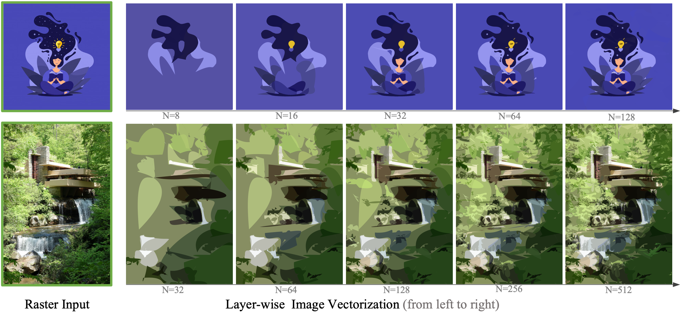
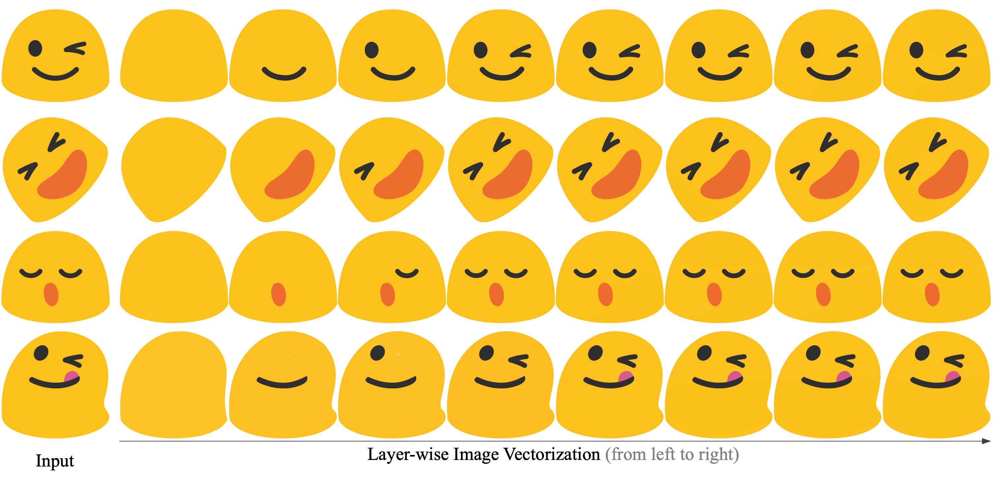
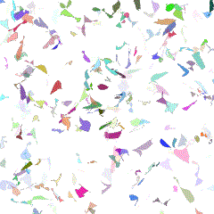
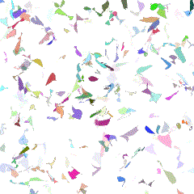

LIVE: Towards Layer-wise Image Vectorization
CVPR 2022 (Oral presentation)
- Xu Ma 1
- Yuqian Zhou 2,3
- Xingqian Xu 2
- Bin Sun 1
- Valerii Filev 4
- Nikita Orlov 4
- Yun Fu 1
- Humphrey Shi 2,4
- 1Northeastern University
- 2UIUC
- 3Adobe Research
- 4Picsart AI Research (PAIR)


Abstract
Image rasterization is a mature technique in computer graphics, while image vectorization, the reverse path of rasterization, remains a major challenge. Recent advanced deep learning-based models achieve vectorization and semantic interpolation of vector graphs and demonstrate a better topology of generating new figures. However, deep models cannot be easily generalized to out-of-domain testing data. The generated SVGs also contain complex and redundant shapes that are not quite convenient for further editing. Specifically, the crucial layer-wise topology and fundamental semantics in images are still not well understood and thus not fully explored. In this work, we propose Layer-wise Image Vectorization, namely LIVE, to convert raster images to SVGs and simultaneously maintain its image topology. LIVE can generate compact SVG forms with layer-wise structures that are semantically consistent with human perspective. We progressively add new bezier paths and optimize these paths with the layer-wise framework, newly designed loss functions, and component-wise path initialization technique. Our experiments demonstrate that LIVE presents more plausible vectorized forms than prior works and can be generalized to new images. With the help of this newly learned topology, LIVE initiates human editable SVGs for both designers and other downstream applications.
Overview
We present a new method to progressively generate a SVG that fits the raster image in a layer-wise fashion. Given an arbitrary input image, LIVE recursively learns the visual concepts by adding new optimizable closed bezier paths and optimizing all these paths.

More examples of layer-wise representation. Given a simple image, our LIVE is able to learn each component in the image in a layer-wise fashion. Here we show the learning progress using 8 paths, where each output appends a new path to the previous result.
Comparsions

 


Video
(contains audio w/ subtitles)
BibTeX
If you find our project useful in your research, please cite:
@InProceedings{xu2022live,
author = {Ma, Xu and Zhou, Yuqian and Xu, Xingqian and Sun, Bin and Filev, Valerii and Orlov, Nikita and Fu, Yun and Shi, Humphrey},
title = {Towards Layer-wise Image Vectorization},
booktitle = {Proceedings of the IEEE conference on computer vision and pattern recognition},
year = {2022}
}